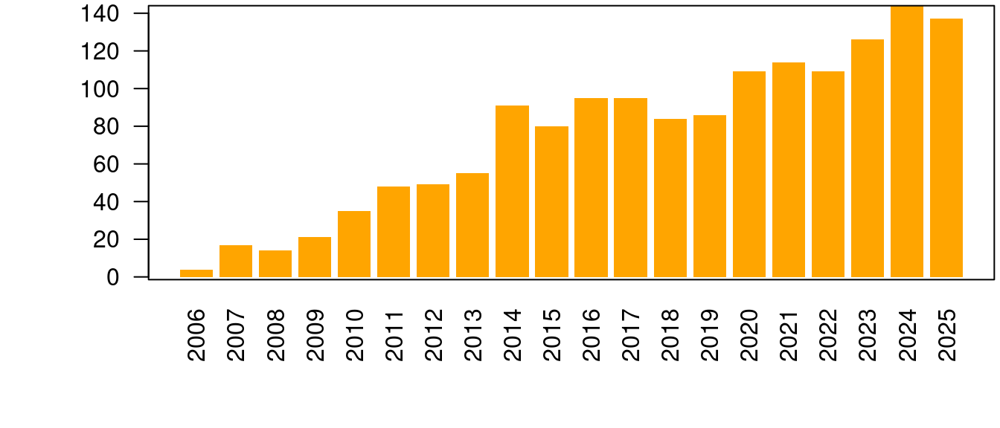

Miguel de Navascués
RESEARCH
Career
- 2009–present
- Researcher, INRAE UMR1062 Centre de Biologie pour la Gestion des Populations (Montpellier, France).
- 2021–2023
- Visiting Researcher, Human Evolution, EBC, Uppsala University (Sweden).
- 2019–2021
- Marie Skłodowska-Curie Fellow, Human Evolution, EBC, Uppsala University (Sweden).
- 2007–2009
- Postdoctoral researcher, CNRS UMR7625 Écologie et Évolution (Paris, France).
- 2006–2007
- Visiting researcher, Université Libre de Bruxelles (Belgium).
- 2006
- Postdoctoral researcher, Universidad Politécnica de Madrid & Centro de Investigación Forestal-INIA (Spain).
- 2001–2005
- Doctoral candidate, University of East Anglia (UK).
Projects
OPTIMISTII - Optimisation du contrôle de Drosophila suzukii via une synergie entre Technique de l’Insecte Stérile et Technique de l’Insecte Incompatible. PARSADA, FranceAgriMer (2025–2029). Rol: Collaborator. PI: N. Rode.
DevOCGen: Développement et applications de nouveaux outils pour la gestion et la conservation des populations naturelles à partir de données génomiques. BiodivOc - Biodiversité Occitanie (2022–2025). Rol: Collaborator. PI: S. Boitard & R Leblois.
MODEGRAD: Modélisation de l’effet de la sélection naturelle, du changement climatique et de la gestion forestière sur la distribution des génotypes dans des gradients environnementaux. AMI CLIMAE 2021, INRAE (2022–2024). Rol: Co-coordinator. PI: I. Scotti.
INTROSPEC: Genomic consequences and evolutionary causes of introgression in the late stages of speciation. ANR AAPG 2019 (2020–2025). Rol: Collaborator. PI: P.-A. Crochet.
PemilADAPT: Adaptive introgression in pearl millet. ANR AAPG 2019 (2020–2025). Rol: Collaborator. PI: C. Berthouly-Salazar.
TimeAdapt: Tracking genetic adaptation of populations using time-series genomic data. Marie Skłodowska-Curie Individual Fellowships 2017 (2019–2021). doi:10.5281/zenodo.3267084. Role: Fellow.
ABCSelection: Detection of loci under selection from temporal population genomic data through ABC random forest. LabEx Agro, Cemeb & Numev Joint Call 2016 (2018–2019). Rol: PI.
GenomeHarvest: Mobilizing biomathematics-bioinformatics and genomics-genetics to decipher genome organization and dynamics as pathways to crop improvement Agropolis Fondation flagship project (2016–2019). Rol: Collaborator. PI A D’Hont & M Ruiz
PlantEvol: Plant biodiversity in sub-Antarctic Islands: evolution, past and future in changing environments Institut Paul-Emile Victor (IPEV) Project no. 1116 (2016–2017). Rol: Collaborator. PI: F Hennion–>
TriPTIC: Trichogramma pour la protection des cultures : pangénomique, traits d’histoire de vie et capacités d’établissement ANR AAPG 2014 (2014–2018). Rol: Collaborator. PI: J-Y Rasplus
Utilisation des longueurs d’haplotype et du déséquilibre de liaison pour l’inférence de l’histoire démographique populationnelle à partir de données génomique. Appel à projets Jeunes Chercheurs et Animations Scientifiques 2013, Institut de Biologie Computationelle (2014). Rol: Collaborator. PI: P Pudlo & R Leblois.
SelfAdapt: Adaptation to climate change under selfing — experimental test and selection footprints in Medicago truncatula. Meta-programme INRA - Adapting Agriculture and Forestry to Climate Change 2012 (ACCAF) INRA (2013–2016). Rol: Co-coordinator. PI: L. Gay.
IBC: Institute de Biologie Computationelle. Investissements d’Avenir, Bioinformatique 2011 (2012–2017). Rol: Collaborator. PI: O. Gascuel.
Interaction between ecological processes within community and population genetic structure. Programme PHC Tournesol (2014–2015). Rol: Host.
Apport des marqueurs de type RAD pour résoudre les relations phylogénétiques au sein de complexes d’espèces : le cas du genre Thaumetopoea . Projet Innovant EFPA (2014). Rol: Co-coordinator. PI: C Kerdelhue.
IGGiPop: Inférence en Génétique et Génomique des Populations. Jeune Équipe INRA 2010 (2010–2013). Rol: Collaborator. PI: R. Vitalis.
Diversidad Genética Neutral y Adaptativa de Taxus baccata en la Red de Parques Nacionales. Ministerio de Medio Ambiente, Proyecto Parques Nacionales (2008–2009). Rol: Collaborator. PI: S. González-Martínez.
TRANSBIODIV: Biodiversité trans-spécifique neutre et fonctionnelle : développements théoriques et quantification chez des organismes modèles. ANR Biodiversité 2006 (2007–2009). Rol: Postdoc. PI: M.-L. Cariou.
Developing Statistical Tools for Detection of Historical Demographic Expansions with Linked Microsatellites. European Science Foundation, CONGEN Exchange Grant — 1142 (2006–2007). Rol: Grantee.
Introgresión genética en las poblaciones relictas de Pinus sylvestris L. var nevadensis del Parque Nacional de Sierra Nevada. Ministerio de Medio Ambiente, Proyecto Parques Nacionales (2005–2008). Rol: Postdoc. PI: J.J. Robledo-Arnuncio.
Field Collection of Weevils (Brachyderes and Rhinusa) in Spain for Phylogeographic and Population Studies. Richard Warn Memorial Fund Travel Award (2003). Rol: Grantee.
Publications
citation statistics
preprints
Revisiting the African mtDNA landscape: A continental update from complete mitochondrial genomes. I. Lankheet, A. Chowdhury, C. Tellgren-Roth, C. Jolly, A.E.R. Soares, M. de Navascués, S. Pacchiarotti, L. Maselli, G. Kouarata, J.-P. Donzo, V. Coetzee, M.d. Castro, P. Ebbesen, E. Priehodová, E. Podgorná, V. Černý, S.T. Green, P. Harena, L. Bakrobena, F.L.M. Fomine, Z.G. Tolesa, W.A. Mengesh, M.d. Jongh, H. Soodyall, K. Bostoen, C. Barbieri, M. Larena, H. Malmström, C.M. Schlebusch (2025) doi:10.1101/2025.04.05.647361. Citations: 1.
Retracing the center of origin and evolutionary history of nutmeg Myristica fragrans, an emblematic spice tree species. J. Kusuma, N. Scarcelli, M. de Navascués, M. Couderc, P. Gerard, J. Duminil (2024) doi:10.22541/au.169114679.94713644/v1. Citations: 4.
articles
Performance evaluation of adaptive introgression classification methods. J. Romieu, G. Camarata, P.-A. Crochet, M. de Navascués, R. Leblois, F. Rousset (2025) doi:10.24072/pcjournal.617. Citations: 3.
Analysis of the abundance of radiocarbon samples as count data. M. de Navascués, C. Burgarella, M. Jakobsson (2025) doi:10.24072/pcjournal.522. Citations: 1.
Variation in the number of radiocarbon (14C) dates does not equal change in Neolithic population size over time. A. Högberg, K. Brink, T. Brorsson, H. Malmström, E. Rudebeck, M. de Navascués (2025) doi:10.1016/j.jasrep.2025.105436. Citations: 0.
Interplay between large low-recombining regions and pseudo-overdominance in a plant genome. M. Salson, M. Duranton, S. Huynh, C. Mariac, C. Tranchant-Dubreuil, J. Orjuela, P. Cubry, A.-C. Thuillet, C. Burgarella, M. de Navascués, L. Zekraouï, M. Couderc, S. Arribat, N. Rodde, A. Barnaud, A. Faye, N. Kane, Y. Vigouroux, C. Berthouly-Salazar (2025) doi:10.1038/s41467-025-61529-z. Citations: 1.
SelNeTime: a python package inferring effective population size and selection intensity from genomic time series data. M. Uhl, P. Bunel, M.d. Navascues, S. Boitard, B. Servin (2025) doi:10.24072/pci.mcb.100406. Citations: 1.
Mating systems and recombination landscape strongly shape genetic diversity and selection in wheat relatives. C. Burgarella, M.-F. Brémaud, G. Von Hirschheydt, V. Viader, M. Ardisson, S. Santoni, V. Ranwez, M. de Navascués, J. David, S. Glémin (2024) doi:10.1093/evlett/qrae039. Citations: 9.
Genome scan of rice landrace populations collected across time revealed climate changes’ selective footprints in the genes network regulating flowering time. N. Ahmadi, M.B. Barry, J. Frouin, M. de Navascués, M.A. Toure (2023) doi:10.1186/s12284-023-00633-4. Citations: 3.
Joint inference of adaptive and demographic history from temporal population genomic data. V.A.C. Pavinato, S. De Mita, J.-M. Marin, M. de Navascués (2022) doi:10.24072/pcjournal.203. Citations: 5.
Ancient and historical DNA in conservation policy. E.L. Jensen, D. Díez-del-Molino, M.T.P. Gilbert, L.D. Bertola, F. Borges, V. Cubric-Curik, M. de Navascués, P. Frandsen, M. Heuertz, C. Hvilsom, B. Jiménez-Mena, A. Miettinen, M. Moest, P. Pečnerová, I. Barnes, C. Vernesi (2022) doi:10.1016/j.tree.2021.12.010. Citations: 61.
Evolution of flowering time in a selfing annual plant: Roles of adaptation and genetic drift. L. Gay, J. Dhinaut, M. Jullien, R. Vitalis, M. de Navascués, V. Ranwez, J. Ronfort (2022) doi:10.1002/ece3.8555. Citations: 6.
Power and limits of selection genome scans on temporal data from a selfing population. M. de Navascués, A. Becheler, L. Gay, J. Ronfort, K. Loridon, R. Vitalis (2021) doi:10.24072/pcjournal.47. Citations: 7.
Phylogeography of the striped field mouse, Apodemus agrarius (Rodentia: Muridae), throughout its distribution range in the Palaearctic region. A. Latinne, M. de Navascués, M. Pavlenko, I. Kartavtseva, R.G. Ulrich, M.-L. Tiouchichine, G. Catteau, H. Sakka, J.-P. Quéré, G. Chelomina, A. Bogdanov, M. Stanko, L. Hang, K. Neumann, H. Henttonen, J. Michaux (2020) doi:10.1007/s42991-019-00001-0. Citations: 28.
Linking seascape with landscape genetics: Oceanic currents favour colonization across the Galápagos Islands by a coastal plant. Y. Arjona, J. Fernández-López, M. de Navascués, N. Alvarez, M. Nogales, P. Vargas (2020) doi:10.1111/jbi.13967. Citations: 13.
Pleistocene origins of chorusing diversity in Mediterranean bush-cricket populations (Ephippiger diurnus). Y. Esquer-Garrigos, R. Streiff, V. Party, S. Nidelet, M. de Navascués, M.D. Greenfield (2019) doi:10.1093/biolinnean/bly195. Citations: 5.
Structure of multilocus genetic diversity in predominantly selfing populations. M. Jullien, M. de Navascués, J. Ronfort, K. Loridon, L. Gay (2019) doi:10.1038/s41437-019-0182-6. Citations: 32.
Discontinuities in quinoa biodiversity in the dry Andes: An 18-century perspective based on allelic genotyping. T. Winkel, M.G. Aguirre, C.M. Arizio, C.A. Aschero, M.d.P. Babot, L. Benoit, C. Burgarella, S. Costa-Tártara, M.-P. Dubois, L. Gay, S. Hocsman, M. Jullien, S.M.L. López-Campeny, M.M. Manifesto, M. de Navascués, N. Oliszewski, E. Pintar, S. Zenboudji, H.D. Bertero, R. Joffre (2018) doi:10.1371/journal.pone.0207519. Citations: 27.
Intermediate degrees of synergistic pleiotropy drive adaptive evolution in ecological time. L. Frachon, C. Libourel, R. Villoutreix, S. Carrère, C. Glorieux, C. Huard-Chauveau, M. de Navascués, L. Gay, R. Vitalis, E. Baron, L. Amsellem, O. Bouchez, M. Vidal, V. Le Corre, D. Roby, J. Bergelson, F. Roux (2017) doi:10.1038/s41559-017-0297-1. Citations: 121.
Identification of gene pools used in restoration and conservation by chloroplast microsatellite markers in Iberian pine species. E. Hernández-Tecles, J.d.l. Heras, Z. Lorenzo, M. de Navascués, R. Alia (2017) doi:10.5424/fs/2017262-9030. Citations: 2.
Demographic inference through approximate-Bayesian-computation skyline plots. M. de Navascués, R. Leblois, C. Burgarella (2017) doi:10.7717/peerj.3530. Citations: 19.
Increased fire frequency promotes stronger spatial genetic structure and natural selection at regional and local scales in Pinus halepensis Mill. K.B. Budde, S.C. González-Martínez, M. de Navascués, C. Burgarella, E. Mosca, Z. Lorenzo, M. Zabal-Aguirre, G.G. Vendramin, M. Verdú, J.G. Pausas, M. Heuertz (2017) doi:10.1093/aob/mcw286. Citations: 38.
Black rat invasion of inland Sahel: insights from interviews and population genetics in south-western Niger. K. Berthier, M. Garba, R. Leblois, M. de Navascués, C. Tatard, P. Gauthier, S. Gagaré, S. Piry, C. Brouat, A. Dalecky, A. Loiseau, G. Dobigny (2016) doi:10.1111/bij.12836. Citations: 31.
Distinguishing migration from isolation using genes with intragenic recombination: detecting introgression in the Drosophila simulans species complex. M. de Navascués, D. Legrand, C. Campagne, M.-L. Cariou, F. Depaulis (2014) doi:10.1186/1471-2148-14-89. Citations: 9.
Genetic, morphological, and acoustic evidence reveals lack of diversification in the colonization process in an island bird. J.C. Illera, Palmero Ana M., Laiolo Paola, Rodríguez Felipe, M.Á. C., M. de Navascués (2014) doi:10.1111/evo.12429. Citations: 32.
The complex history of the olive tree: from Late Quaternary diversification of Mediterranean lineages to primary domestication in the northern Levant. G. Besnard, B. Khadari, M. de Navascués, M. Fernández-Mazuecos, A.E. Bakkali, N. Arrigo, D. Baali-Cherif, V.B.-B.d. Caraffa, S. Santoni, P. Vargas, V. Savolainen (2013) doi:10.1098/rspb.2012.2833. Citations: 324.
Recent population decline and selection shape diversity of taxol-related genes. C. Burgarella, M. de Navascués, M. Zabal-Aguirre, E. Berganzo, M. Riba, M. Mayol, G.G. Vendramin, S.C. González-Martínez (2012) doi:10.1111/j.1365-294X.2012.05532.x. Citations: 34.
Evolution of neutral and flowering genes along pearl millet (Pennisetum glaucum) domestication. G. Lakis, M. de Navascués, S. Rekima, M. Simon, M.-S. Remigereau, M. Leveugle, N. Takvorian, F. Lamy, F. Depaulis, T. Robert (2012) doi:10.1371/journal.pone.0036642. Citations: 16.
Mutation rate estimates for 110 Y-chromosome STRs combining population and father-son pair data. C. Burgarella, M. de Navascués (2011) doi:10.1038/ejhg.2010.154. Citations: 114.
Genetic diversity and fitness in small populations of partially asexual, self-incompatible plants. M. de Navascués, S. Stoeckel, S. Mariette (2010) doi:10.1038/hdy.2009.159. Citations: 45.
CpDNA-based species identification and phylogeography: application to African tropical tree species. J. Duminil, M. Heuertz, J.-L. Doucet, N. Bourland, C. Cruaud, F. Gavory, C. Doumenge, M. de Navascués, O.J. Hardy (2010) doi:10.1111/j.1365-294X.2010.04917.x. Citations: 64.
Combining contemporary and ancient DNA in population genetic and phylogeographical studies. M. de Navascués, F. Depaulis, B.C. Emerson (2010) doi:10.1111/j.1755-0998.2010.02895.x. Citations: 62.
Estimating gametic introgression rates in a risk assessment context: a case study with Scots pine relicts. J.J. Robledo-Arnuncio, M. Navascués, S.C. González-Martínez, L. Gil (2009) doi:10.1038/hdy.2009.78. Citations: 30.
Characterization of historical demographic expansions from pairwise comparisons of haplotypes using linked mirosatellites. M. de Navascués, O. Hardy, C. Burgarella (2009) doi:10.1534/genetics.108.098194. Citations: 15.
Elevated substitution rate estimates from ancient DNA: model violation and bias of Bayesian methods. M. de Navascués, B.C. Emerson (2009) doi:10.1111/j.1365-294X.2009.04333.x. Citations: 79.
The Effect of Altitude on the Pattern of Gene Flow in the Endemic Canary Island Pine, Pinus canariensis. M. de Navascués, G.G. Vendramin, B.C. Emerson (2008) doi:10.1515/sg-2008-0052. Citations: 18.
Narrow genetic base in forest restoration with holm oak (Quercus ilex L.) in Sicily. C. Burgarella, M. de Navascués, Á. Soto, Á. Lora, S. Fici (2007) doi:10.1051/forest:2007055. Citations: 37.
Natural recovery of genetic diversity by gene flow in reforested areas of the endemic Canary Island pine, Pinus canariensis. M. de Navascués, B.C. Emerson (2007) doi:10.1016/j.foreco.2007.04.009. Citations: 40.
Chloroplast microsatellites reveal colonization and metapopulation dynamics in the Canary Island pine. M. de Navascués, Z. Vaxevanidou, S.C. González-Martínez, J. Climent, L. Gil, B.C. Emerson (2006) doi:10.1111/j.1365-294X.2006.02960.x. Citations: 75.
Chloroplast microsatellites: measures of genetic diversity and the effect of homoplasy. M. de Navascués, B.C. Emerson (2005) doi:10.1111/j.1365-294X.2005.02504.x. Citations: 100.
book chapter
- Introgresión genética en las poblaciones relictas de Pinus sylvestris L. var. nevadensis del Parque Nacional de Sierra Nevada. J.J. Robledo-Arnuncio, M. de Navascués, S.C. González-Martínez, L. Gil (2009) in L. Ramírez, B. Asensio Proyectos de Investigación en Parques Nacionales: 2005-2008, Organismo Autónomo Parques Nacionales, Madrid http://www.marm.es/es/ministerio/organizacion/organismos-publicos/organismo-autonomo-parques-nacionales-oapn/prog-inv-pn/oapn_inv_artic05.aspx.
theses
Modélisation intégrée des paramètres démographiques et génétiques. T. Lejeune supervised by M. de Navascués, R. Leblois, L. Marescot (2025) MSc thesis. Université de Montpellier, Montpellier (France).
Comment identifier la part de l’introgression qui est due à la sélection ? J. Romieu supervised by F. Rousset, R. Leblois, M. de Navascués (2025) PhD thesis. Université de Montpellier, Montpellier (France).
Exploration de scénarios évolutifs de colonisation des Îles Kerguelen par la truite commune (Salmo trutta). L. Vallée supervised by S. Muratorio, M. de Navascués, G. Brahy (2024) MSc thesis. Université de Pau et des Pays de l’Adour, Pau (France).
Évaluation des performances des méthodes de classification d’introgression adaptative. G. Camarata supervised by J. Romieu, F. Rousset, R. Leblois, M. de Navascués (2024) MSc thesis. Univerité de Montpellier, Montpellier (France).
Analyse temporelle de la diversité en régime autogame : Approches théorique et empirique. M. Jullien supervised by J. Ronfort, L. Gay, M. de Navascués (2019) PhD thesis. Montpellier SupAgro, Montpellier (France).
Detection of archaic introgression without genomic reference from the source population an ABC approach. E.-E. Giaglara supervised by M. de Navascués, M. Gautier (2019) MSc thesis. Université de Montpellier, Montpellier (France).
Évaluation de la performance des statistiques pour la détection de l’introgression adaptative chez le mil (Pennisetum glaucum). O. Belkasseh supervised by M. de Navascués, C. Burgarella (2018) MSc project. Université de Montpellier, Montpellier (France).
Limites des genome-scans pour la détection de locus sous sélection chez les espèces autogames : une étude par simulation. A. Becheler supervised by M. de Navascués, R. Vitalis (2014) MSc thesis. Université Montpellier 2, Montpellier (France).
Diversification of the olive tree (Olea europaea) in the Central Sahara and Macaronesia during the Quaternary. M. Goudet supervised by G. Besnard, M. de Navascués (2014) MSc thesis. Université Toulouse III Paul Sabatier, Toulouse (France).
Genetic diversity of the endemic Canary Island pine tree, Pinus canariensis. M. de Navascués supervised by B.C. Emerson (2005) PhD thesis. University of East Anglia, Norwich (UK) doi:10.6084/m9.figshare.1108027.v1.
Metapopulation dynamics as an explanation to the genetic structure of the desert locust populations: parameter exploration. M. de Navascués supervised by K. Ibrahim (2001) BSc project. University of East Anglia, Norwich (UK) doi:10.6084/m9.figshare.1108026.v1.
conference proceedings
Diversidad y flujo genético en plantaciones de Pinus canariensis. M. de Navascués, B.C. Emerson (2006) in IV Jornadas Forestales de la Macaronesia, Gobierno de Canarias, Governo dos Açores, Arena, Breña Baja, La Palma (Spain) https://hal.inrae.fr/hal-02755419.
Estudio de la variabilidad genética de repoblaciones de Quercus ilex L. subsp. ballota (Desf.) Samp. in Bol. en Andalucía. C. Burgarella, M. de Navascués, S. Fici, A.L. González (2005) in Libro de Resúmenes, Conferencias y Ponencias del IV Congreso Forestal Español, Sociedad Española de Ciencias Forestales, Zaragoza (Spain) https://hal.inrae.fr/hal-02828959.
El éxito evolutivo de los insectos. M. de Navascués (1997) in Á. Delgado Buscalioni, J. Díaz Díaz, M. Herráiz Moreno (eds.) I Encuentro de Estudiantes sobre Biología Evolutiva, Universidad Autónoma de Madrid, Asociación de Estudiantes de Biología, Madrid (Spain).
Software and Data
Software
SelNeTime: a python package inferring effective population size and selection intensity from genomic time series data. M. Uhl, P. Bunel, M. de Navascués, S. Boitard, B. Servin (2025) https://forge.inrae.fr/genetic-time-series/selnetime.
DARth ABC: Analysis of the Dated Archaeological Record through Approximate Bayesian Computation. M. de Navascués (2024) doi:10.5281/zenodo.13383349.
TimeAdapt: joint inference of demography and selection from longitudinal population genomic data. M. de Navascués (2023) doi:10.5281/zenodo.8232572.
Tracking Selection using Temporal Population Genomics Data. V.A.C. Pavinato, S. De Mita, J.M. Cridland, M. de Navascués (2022) doi:10.5281/zenodo.7244868.
DriftTest. a computer program to detect selection from temporal genetic differentiation in partially selfing populations. M. de Navascués, R. Vitalis (2020) doi:10.5281/zenodo.8269179.
DriftTest-Evaluation. A suite of R scripts to evaluate the performance of DriftTest for detection of selection with temporal data. M. de Navascués, R. Vitalis (2020) doi:10.5281/zenodo.4034607.
Code from Structure of multilocus genetic diversity in predominantly selfing populations. M. Jullien, M. de Navascués, J. Ronfort, L. Gay (2019) doi:10.15454/VYPXIJ.
ABCQuinoa: Scripts in R for an an approximate Bayesian computation analysis of ancient Quinoa gene pools and their contribution to modern varieties in Antofagasta. M. de Navascués, C. Burgarella (2018) doi:10.5281/zenodo.1489308.
DIYABCskylineplot: A suite of R scripts to perform a Approximate Bayesian Computation Skyline Plot. M. de Navascués (2017) doi:10.5281/zenodo.267182.
microsatABC-IM: Approximate Bayesian computation inferences under the isolation with migration model from microsatellite data. M. de Navascués (2017) doi:10.5281/zenodo.895905.
TempoDiff: a computer program to detect selection from temporal genetic differentiation. R. Vitalis, L. Gay, M. de Navascués (2017) doi:10.5281/zenodo.375600.
SIplusA: a population genetics forward simulator with self-incompatibility system and partial asexuality. M. de Navascués, S. Mariette (2010) doi:10.5281/zenodo.163613.
LMSE (LinkMicroSatelliteExpansion): Characterization of demographic expansions from pairwise comparisons of linked microsatellite haplotypes. M. de Navascués (2009) doi:10.5281/zenodo.4053655.
Blue Caterpillar: assignment methods on chloroplast microsatellites for provenance identification of reforested stands or seedlots. M. de Navascués, J. de Navascués (2006) doi:10.5281/zenodo.4052295.
Data
VCF files from the study of low recombining genomic regions in pearl millet. M. Salson, M. Duranton, S. Huynh, C. Mariac, C. Tranchant-Dubreuil, J. Orjuela, P. Cubry, A.-C. Thuillet, C. Burgarella, M. de Navascués, L. Zekraouï, M. Couderc, S. Arribat, N. Rodde, A. Barnaud, A. Faye, N. Kane, Y. Vigouroux, C. Berthouly-Salazar (2025) doi:10.23708/SN2T4A.
Medicago truncatula temporal data from: Structure of multilocus genetic diversity in predominantly selfing populations. M. Jullien, M. de Navascués, J. Ronfort, K. Loridon, L. Gay (2019) doi:10.15454/VCZIMR.
Data from: Pleistocene origins of chorusing diversity in Mediterranean bush-cricket populations (Ephippiger diurnus). Y. Esquer-Garrigos, R. Streiff, V. Party, S. Nidelet, M. de Navascués, M.D. Greenfield (2018) doi:10.5061/DRYAD.M04R4B5.
Data from: Distinguishing migration from isolation using genes with intragenic recombination: detecting introgression in the Drosophila simulans species complex. M. de Navascués, D. Legrand, C. Campagne, M.-L. Cariou, F. Depaulis (2015) doi:10.5061/DRYAD.67F8V.
Data from: Genetic, morphological and acoustic evidence reveals lack of diversification in the colonization process in an island bird. J.C. Illera, A.M. Palmero, P. Laiolo, F. Rodríguez, Á.C. Moreno, M. de Navascués (2014) doi:10.5061/DRYAD.Q42P7.
Data from: Recent population decline and selection shape diversity of taxol-related genes. C. Burgarella, M. de Navascués, M. Zabal-Aguirre, E. Berganzo, M. Riba, M. Mayol, G.G. Vendramin, S.C. González-Martínez (2012) doi:10.5061/DRYAD.4J7Q3S0T.
Data from: Genetic diversity of the endemic Canary Island pine tree, Pinus canariensis (Ph.D. thesis). M. de Navascués, B.C. Emerson (2012) doi:10.5061/dryad.7tr51.
Data from: Elevated substitution rate estimates from ancient DNA: model violation and bias of Bayesian methods. M. de Navascués, B.C. Emerson (2010) doi:10.5061/DRYAD.1355.
Conferences
oral communications
Detection of introgression: how hard can it be? M. de Navascués (2024) in From hybridisation to introgression: detection and evolutionary consequences, UMR DIADE, IRD, Online, Montpellier (France). Invited.
Demographic inference from radiocarbon data. M. de Navascués (2024) in Mathematical and Computational Evolutionary Biology, MCEB, Saint-Martin-de-Londres (France).
Joint inference of demography and selection from genomic temporal data using Approximate Bayesian Computation. M. de Navascués, V.A. Pavanito, S.d. Mita, J.-M. Marin (2019) in Mathematical and Computational Evolutionary Biology, MCEB, Porquerolles (France) https://hal.inrae.fr/hal-02787319.
Joint inference of adaptive and demographic history from temporal population genomic data. M. de Navascués, V.A. Pavinato, S. De Mita, J.-M. Marin (2019) in Approche Interdisciplinaire de l’Evolution Moléculaire, GDR AIEM, Toulouse (France) https://hal.inrae.fr/hal-02790079.
Tracking adaptation of selfing populations to environmental changes with temporal genetic data. M. de Navascués (2017) in 4èmes Rencontres Scientifiques du Département EFPA (INRA), Département EFPA (INRA), Pont-à-Mousson (France).
Tracking adaptation to environmental changes: selfing and detection of loci under selection. M. de Navascués, A. Becheler, R. Vitalis (2015) in Empirisme et Théorie en Écologie et Évolution, GDR AIEM, Gif-sur-Yvette (France) https://hal.inrae.fr/hal-02792415.
Limites des genome-scans pour la détection de locus sous sélection chez les espèces autogames. M. de Navascués, A. Becheler, R. Vitalis (2014) in Journées ARCAD, ARCAD, Montpellier (France) https://hal.inrae.fr/hal-02794123.
A new composite likelihood method to characterize demographic expansions: preliminary results from Y-chromosome STR data. M. de Navascués, C. Burgarella (2008) in DNA in Forensics, Universitá Politecnica delle Marche, Ancona (Italy) https://hal.inrae.fr/hal-02755469.
Distinguishing shared ancestral polymorphism from recent introgression in genes with recombination. M. de Navascués, F. Depaulis (2008) in Réunion du GDR Génomique des Populations et Génomique Évolutive, GDR Génomique des Populations et Génomique Évolutive, Sète (France) https://hal.inrae.fr/hal-02814597.
The role of clonality in the maintenance of self-incompatibility. M. de Navascués, S. Mariette (2007) in 2èmes Journées EvoSud, Réseau EvoSud, Orsay (France) https://hal.inrae.fr/hal-02814599.
Characterization of demographic expansions from linked microsatellite data. M. de Navascués (2007) in Workshop: Estimating Demographic Parameters from Genetic Data, Conférence Universitaire de Suisse Occidentale (CUSO), La Fouly (Switzerland) https://hal.inrae.fr/hal-02814600.
High substitution rate estimates from temporally sampled sequences: are they biased or biologically meaningful? M. de Navascués, B.C. Emerson (2007) in Annual Meeting of the Society for Molecular Biology and Evolution, SMBE, Halifax (Canada) https://hal.inrae.fr/hal-02751473.
Coalescent simulations for the evaluation of statistical tools for demographic inference and the effect of homoplasy in chloroplast microsatellites. M. de Navascués, B.C. Emerson (2006) in Population Genetics and Genomics of Forest Trees: from Gene Funcyion to Evolutionary Dynamics and Conservation, IUFRO, Alcalá de Henares (Spain) https://hal.inrae.fr/hal-02751238.
Age of alleles: how ancestral are aDNA sequences? M. de Navascués (2006) in New Tools for Biodiversity Conservation Through the Advancement of Phylogeographic Methodologies, European Science Foundation Exploratory Workshop, Norwich (UK) https://hal.inrae.fr/hal-02814083. Invited.
Estudio biogeográfico y demográfico del pino canario mediante marcadores moleculares. M. de Navascués, B.C. Emerson (2005) in XIII Workshop Avances en Biología Molecular por Jóvenes Investigadores en el Extranjero, Centro Nacional de Biotecnología, Madrid (Spain) https://hal.inrae.fr/hal-02827237.
Genetic diversity in the Canary Island pine tree. M. de Navascués, B.C. Emerson (2004) in Bio-Colloquium, School of Biological Sciences, University of East Anglia, Norwich (UK) https://hal.inrae.fr/hal-02827238.
Can flowering time produce isolation by altitude in the Canary Island pine? M. de Navascués, B.C. Emerson (2004) in IXth IOPB Meeting - Plant Evolution in Mediterranean Climate Zones, IOPB, Valencia (Spain) https://hal.inrae.fr/hal-02763094.
El éxito evolutivo de los insectos. M. de Navascués (1997) in I Encuentro de Estudiantes sobre Biología Evolutiva, Universidad Autónoma de Madrid, Asociación de Estudiantes de Biología, Madrid (Spain).
posters
Interplay between low-recombining regions and overdominance in a plant genome? M. Salson, M. Duranton, S. Huynh, C. Mariac, C. Tranchant-Dubreuil, J. Orjuela, P. Cubry, A.-C. Thuillet, C. Burgarella, M. de Navascués, L. Zekraouï, M. Couderc, S. Arribat, N. Rodde, A. Barnaud, A. Faye, N. Kane, Y. Vigouroux, C. Berthouly-Salazar (2025) in Congress of the European Society for Evolutionary Biology, ESEB, Barcelona (Spain) https://hal.science/hal-05227656.
Infer selection and demography from genomic time series. P. Bunel, M. Uhl, M.d. Navascués, S. Boitard, B. Servin (2025) in Séminaire des Doctorants du Département de Génétique Animale de l’INRAE, Département GA (INRAE), Bordeaux (France) https://hal.science/hal-05111581.
Performance evaluation of adaptive introgression classification methods. J. Romieu, G. Camarata, P.-A. Crochet, M.d. Navascués, R. Leblois, F. Rousset (2024) in Mathematical and Computational Evolutionary Biology, MCEB, Saint-Martin-de-Londres (France) https://hal.inrae.fr/hal-04713611.
SelNeTime: A new method inferring demography and selection from genomic time series data. M. Uhl, S. Boitard, M. de Navascués, B. Servin (2024) in conservgenomics: Conservation Genomics Paris, Muséum National d’Histoire Naturelle, Paris (France) https://hal.inrae.fr/hal-04659055.
Joint inference of demography and selection from temporal population genomic data via approximate Bayesian computation. V.A.C. Pavinato, S. De Mita, J.-M. Marin, M. de Navascués (2021) in Probabilistic Modeling in Genomics (Virtual), Cold Spring Harbor Laboratory, Online (USA) doi:10.6084/m9.figshare.23943312.
Joint inference of effective population size and genetic load from temporal population genomic data. V.A.C. Pavinato, S. De Mita, J.-M. Marin, M. de Navascués (2021) in Ancient Biomolecules of Plants, Animals, and Microbes, Wellcome Connecting Science, Online (UK) doi:10.6084/m9.figshare.23943828.
Detection of loci under selection from temporal population genomic data through ABC random forest. V.A.C. Pavinato, J.-M. Marin, M. de Navascués (2018) in Journées Scientifiques du LabEx Numev, LabEx Numev, Montpellier (France) https://hal.inrae.fr/hal-02787307.
Genetic diversity in selfing populations: a case study in Medicago truncatula. M. Jullien, J. Ronfort, M. Navascués, L. Gay (2018) in II Joint Congress on Evolutionary Biology, European Society for Evolutionary Biology, American Society of Naturalists, Society for the Study of Evolution, Society of Systematic Biologists, Montpellier (France) doi:10.6084/m9.figshare.13022732.
Temporal FST genome scans: the case of partially selfing populations. M. de Navascués, A. Becheler, L. Gay, J. Ronfort, R. Vitalis (2018) in II Joint Congress on Evolutionary Biology, European Society for Evolutionary Biology, American Society of Naturalists, Society for the Study of Evolution, Society of Systematic Biologists, Montpellier (France) doi:10.6084/m9.figshare.13010312.v1.
Temporal FST genome scans: the case of partially selfing populations. M. de Navascués, A. Becheler, L. Gay, J. Ronfort, R. Vitalis (2018) in Sex uncovered: the evolutionary biology of reproductive systems, Jacques Monod Conference, Roscoff (France) doi:10.6084/m9.figshare.13010312.v1.
Diversity and genetic structure in selfing populations in the absence of selection. M. Jullien, M. de Navascués, J. Ronfort, L. Gay (2018) in Sex uncovered: the evolutionary biology of reproductive systems, Jacques Monod Conference, Roscoff (France) doi:10.6084/m9.figshare.13022738.
Tracking adaptation in selfing plant populations. M. de Navascués, A. Becheler, M. Jullien, L. Frachon, C. Libourel, R. Villoutreix, J. Ronfort, F. Roux, R. Vitalis, L. Gay (2016) in Evolutionary genomics and systems biology: bringing together theoretical and experimental approaches, Jacques Monod Conference, Roscoff (France) doi:10.6084/m9.figshare.4036098.
Detection of locus under selection from temporal samples of partial-selfing populations. M. de Navascués, A. Becheler, R. Vitalis (2015) in SMBE Satellite meeting SMBEBA 2015. Investigating biological adaptation with NGS: data and models, SMBE, Saint-Martin-de-Londres (France) https://hal.inrae.fr/hal-02797018.
Tracking adaptation to environmental changes: selfing and detection of loci under selection. A. Becheler, R. Vitalis, M. de Navascués (2015) in Congress of the European Society for Evolutionary Biology, ESEB, Lausanne (Switzerland) doi:10.6084/m9.figshare.3571107.
Seed collections to study plant evolution. L. Gay, J. Dhinaut, J.-M. Prosperi, M. de Navascués, J. Ronfort (2015) in Annual Meeting of the Society for Molecular Biology and Evolution, SMBE, Vienna (Austria) https://hal.inrae.fr/hal-02795320.
Demographic inference using skyline plots on approximate Bayesian computation. M. de Navascués, C. Burgarella (2012) in Annual Meeting of the Society for Molecular Biology et Evolution, SMBE, Dublin (Ireland) doi:10.6084/m9.figshare.1108025.
Inférence démographique utilisant des “skyline plots” avec le calcul Bayésien approché. M. de Navascués (2012) in Le Petit Pois Déridé, Groupe d’Etude de Biologie et Génétique des Populations, Avignon (France) https://hal.inrae.fr/hal-02745827.
Demographic inference using skyline plots on approximate Bayesian computation. M. de Navascués, C. Burgarella (2012) in Mathematical and Computational Evolutionary Biology, MCEB, Saint-Martin-de-Londres (France).
Étude d’un système de reproduction combinant auto-incompatibilité gamétophytique et asexualité. M. de Navascués, S. Stoeckel, S. Mariette (2010) in Écologie 2010, Société Française d’Écologie, Montpellier (France) doi:10.6084/m9.figshare.1108015.
Mutation rate estimates for 110 Y-chromosome STRs combining population and father-son pair data. M. de Navascués, C. Burgarella (2010) in Annual Meeting of the Society for Molecular Biology and Evolution, SMBE, Lyon (France) doi:10.6084/m9.figshare.1108022.
Distinguishing recent introgression from ancestral polymorphism as the origin of shared polymorphisms and application on the Drosophila simulans species complex. M. de Navascués, D. Legrand, C. Campagne, M.-L. Cariou, F. Depaulis (2009) in Annual Meeting of the Society for Molecular Biology and Evolution, SMBE, Iowa City (USA) doi:10.6084/m9.figshare.1108024.
Discrimination between ancestral polymorphism and recent introgression as causes of shared polymorphic sites between species. M. de Navascués, F. Depaulis (2008) in Annual Meeting of the Society for Molecular Biology and Evolution, SMBE, Barcelona (Spain) doi:10.6084/m9.figshare.1108019.
Demographic expansions in conifer and human populations characterized by linked microsatellite data. C. Burgarella, M. de Navascués (2008) in Annual Meeting of the Society for Molecular Biology and Evolution, SMBE, Barcelona (Spain) doi:10.6084/m9.figshare.1108021.
Evolution of inbreeding depression in species combining self-incompatibility and partial asexual reproduction. M. Navascués, S. Stoeckel, S. Mariette (2007) in Congress of the European Society of Evolutionary Biology, ESEB, Uppsala (Sweden) doi:10.6084/m9.figshare.1108016.
Characterization of historical demographic expansions from linked microsatellite data. M. de Navascués, O. Hardy (2007) in Evolutionary Genomics, Jacques Monod Conference, Roscoff (France) doi:10.6084/m9.figshare.1108020.
Evaluation of the power of assignment methods on chloroplast microsatellites for provenance identification of reforested stands. M. de Navascués (2006) in Population Genetics and Genomics of Forest Trees: from Gene Function to Evolutionary Dynamics and Conservation, IUFRO, Alcalá de Henares (Spain) doi:10.6084/m9.figshare.1108018.
Diversidad y flujo genético en plantaciones de Pinus canariensis. M. de Navascués, B.C. Emerson (2006) in IV Jornadas Forestales de la Macaronesia, Gobierno de Canarias, Governo dos Açores, Arena, Breña Baja, La Palma (Spain) doi:10.6084/m9.figshare.1108023.
Chloroplast microsatellite evolution in conifers: measures of genetic diversity and the effects of homoplasy. M. de Navascués, B.C. Emerson (2003) in Congress of the European Society for Evolutionary Biology, ESEB, Leeds (UK) doi:10.6084/m9.figshare.1108017.
Chloroplast microsatellite evolution in conifers. M. de Navascués, B.C. Emerson (2003) in Postgraduate Poster Competition, Association of Applied Biologist, London (UK) doi:10.6084/m9.figshare.1108017.